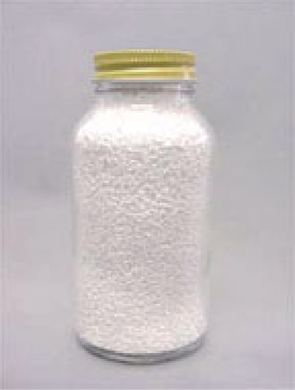

安息香酸・安息香酸ナトリウム
- 安息香酸
- 既存化学物質番号 ：3-1397
- CAS No. ：65-85-0
- 安息香酸ナトリウム
- 既存化学物質番号 ：3-1293
- CAS No. ：532-32-1
- 1) 医薬品製剤原料（殺菌保存剤）
- 2) 食品の添加物（食品保存料
- 3) 化粧品の原料（化粧品防腐剤）
- 4) 工業薬品（不凍液の防錆剤
- 等として世界で最も広く使用されており、米国ではgenerally recognized as safe物質として、認められています。
製品・包装形態
-
製品形状
安息香酸/フレーク品
安息香酸ナトリウム/顆粒品
安息香酸ナトリウム/粉末品
-
包装形態
20kg入 紙袋
300kg入 フレコンバック
効力
- 静菌的作用が強い
- 酸性では、ほとんどすべての腐敗·変敗菌に発育阻止作用
- 局所の殺菌作用
- サルチル酸と併用すると角質軟化作用
- 防錆作用
使用量例
- 本品は、下記の食品に使用が認められています。
| 食 品 名 | 添 加 量 | |
|---|---|---|
| 安息香酸として | 安息香酸ナトリウムとして | |
| しょう油・清涼飲料水・シロップ | 1kgにつき0.6g以下 | 1kgにつき0.71g以下 |
| キャビア | 1kgにつき2.5g以下 | 1kgにつき2.95g以下 |
| 果汁ペースト・果汁 | - | 1kgにつき1.18g以下 |
| マーガリン | 1kgにつき1.0g以下 | 1kgにつき1.18g以下 |
| ソルビン酸、ソルビン酸カリウム、ソルビン酸カルシウム又はこれらのいずれかを含む 製剤を使用する場合は、安息香酸としての使用量およびソルビン酸としての使用量の 合計量が1.0g以下であること。 | ||
用途・規格
- 用途
-
食品添加物
しょう油、清涼飲料水、シロップ、キャビア、果汁、果実ペースト -
日本薬局方
製剤原料、保存剤、カフェインの溶解補助剤「安息香酸系」 -
外原規
基礎化粧品、芳香化粧品、清浄用化粧品、頭髪化粧品 -
工業用
食品包装紙、繊維の媒染剤、不凍液の防食剤等
- 規格
- 食品添加物 安息香酸
| 項 目 | 規 格 |
|---|---|
| 性状 | 本品は、白色の小葉状又は針状の結晶で、においがないか又はわずかにベンズアルデヒドようのにおいがある。 |
| 確認試験 | 安息香酸塩（2）の反応を呈する。 |
| 融点 | 121～123℃ |
| 重金属 | 10μg/g以下 |
| ヒ素 | 4.0μg/g以下 |
| 易酸化物 | 0.02mol/l KMnO4 0.5ml以下 |
| 塩素化合物 | 0.014％以下 |
| フタル酸 | 50μg/g以下 |
| 乾燥減量 | 0.50％以下 |
| 含量 | 99.5％以上 |
第8版食品添加物公定書
- 食品添加物 安息香酸ナトリウム
| 項 目 | 規 格 |
|---|---|
| 外観・性状 | 白色・無臭 |
| 確認試験 | 本品は、ナトリウム塩の反応及び安息香酸塩の反応を呈する。 |
| 溶状 | 無色澄明 |
| 遊離酸及び遊離アルカリ | 0.1mol/l NaOH 0.40ml以下 ・ 0.05mol/l H2SO4 0.20ml以下 |
| 硫酸塩 | 0.30％以下 |
| 重金属 | 10μg/g以下 |
| ヒ素 | 4.0μg/g以下 |
| 易酸化物 | 0.02mol/l KMnO4 0.5ml以下 |
| 塩素化合物 | 0.014％以下 |
| フタル酸 | 50μg/g以下 |
| 乾燥減量 | 1.5％以下 |
| 含量 | 99.0％以上 |
第8版食品添加物公定書
- 日本薬局方 安息香酸
| 項 目 | 規 格 |
|---|---|
| 性状 | 本品は、白色の結晶又は結晶性の粉末で、においがないか、又はわずかにベンズアルデヒドようのにおいがある。 エタノールに溶けやすく水に溶けにくい。 |
| 確認試験 | 安息香酸塩の定性反応(2)を呈する。 |
| 融点 | 121～124℃ |
| 重金属 | 20ppm以下 |
| 塩素化合物 | 0.01mol/l HCL 1.2ml以下 |
| KMnO4還元性物質 | 0.02mol/l KMnO4 0.50ml以下 |
| フタル酸 | 緑色の蛍光が比較液より濃くない |
| 硫酸呈色物 | Q以下 |
| 乾燥減量 | 0.5％以下 |
| 強熱残分 | 0.05％以下 |
| 含量 | 99.5％以上 |
第16改正日本薬局方
- 日本薬局方 安息香酸ナトリウム
| 項 目 | 規 格 |
|---|---|
| 外観・性状 | 白色・無臭 |
| 確認試験 | 本品の水溶液(1→100)は安息香酸塩の定性反応並びにナトリウム塩の定性反応(1)及び(2)を呈する。 |
| 溶状 | 無色澄明 |
| 酸またはアルカリ | 0.1mol/l NaOH 0.40ml以下 ・ 0.05mol/l H2SO4 0.20ml以下 |
| 硫酸塩 | 0.120％以下 |
| 重金属 | 20ppm以下 |
| ヒ素 | 2ppm以下 |
| 塩素化合物 | 0.01mol/l HCL 1.2ml以下 |
| フタル酸 | 緑色の蛍光が比較液より濃くない |
| 乾燥減量 | 1.5％以下 |
| 含量 | 99.0％以上 |
第16改正日本薬局方